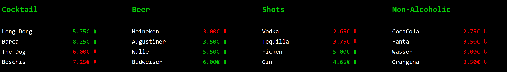
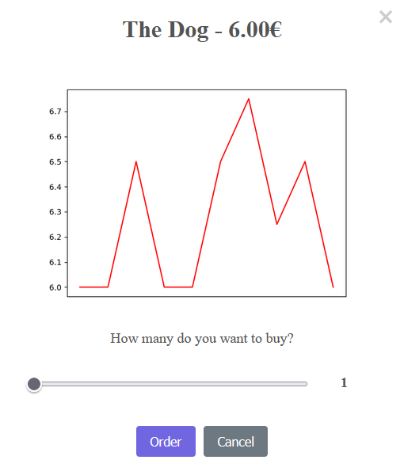
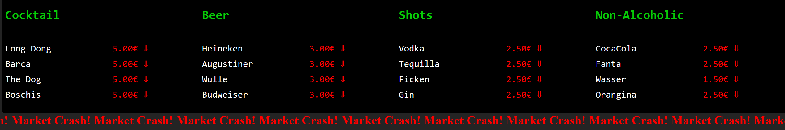
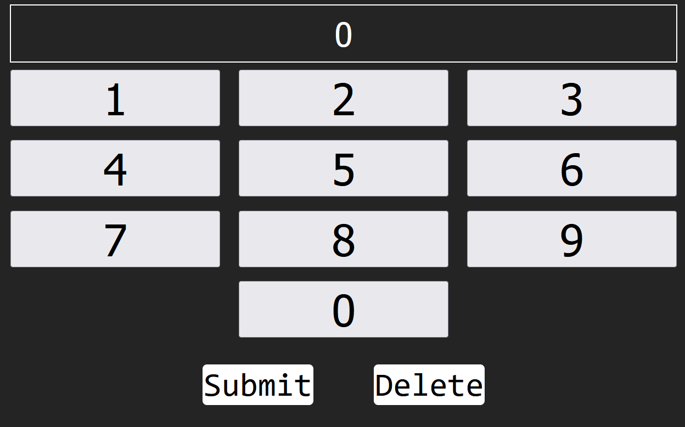
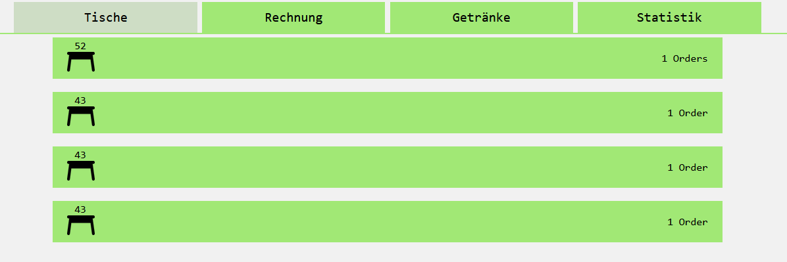
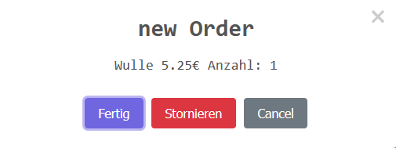

Website
Keywords: Python Javascript FastAPI Project
The code for this project is available on GitHub
This project is a web application with a backend written in Python using FastAPI and a frontend written in JavaScript.
The application is designed for a bar, where customers can order drinks through a "Market" interface. Drink prices change dynamically based on demand and a small element of randomness.
The concept is inspired by Barcelona’s “Dow Jones Bar”, and I wanted to recreate a similar experience. The image below shows the final product as it would appear on a customer-facing tablet.
The tablet is necessary, as it displays live pricing and allows for easy ordering.

When a user taps on an item in the Market, an ordering pop-up appears. This pop-up allows the user to view historical price trends and place an order. During the ordering process, the user can select the desired quantity and confirm the order.

To display current and historical prices, the backend continuously tracks all price changes and user orders in a JSON file. The price graph shown above is generated in the backend, encoded as a base64 PNG, and then sent to the frontend.
Currently, after 50 drinks have been ordered, a "market crash" event is triggered for 2 minutes. During this time, all drink prices drop to their minimum levels. This feature adds extra fun to the experience and helps prevent long-term price inflation after too many orders.

In addition to the customer experience, the bartender experience is also considered. This includes assigning table numbers to tablets, viewing orders, generating bills, and managing the drinks menu and statistics. Currently, the admin interface allows assigning viewing orders at the moment. I plan to implement the remaining functionality in future updates.

Before opening the index.html file (where customers can view current prices and place orders), the bartender must first input the table number, as shown above.
For the bartender, there is a dedicated admin site. The current state of this admin panel is shown below:

The latest feature added to the admin panel is the ability to click on an order to view more detailed information. When an order is selected, its details appear in a pop-up window, as shown below:

Conclusion
It was an interesting challenge to try to recreate an existing concept and bring it to life through this project. I hope to have more time in the future to further develop it and add new features.
Changes to the Project Since This Page Went Online
- Added a Python program for adding new drinks. To add a drink, you specify its type, name, and minimum and maximum prices.